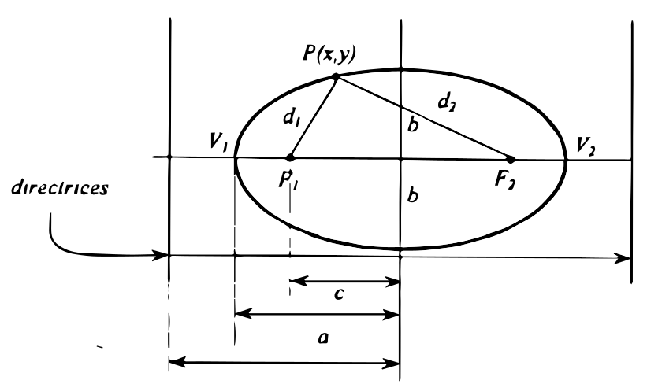
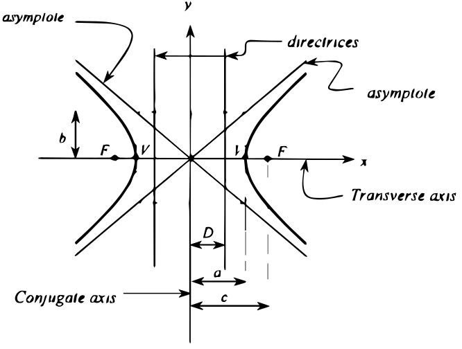
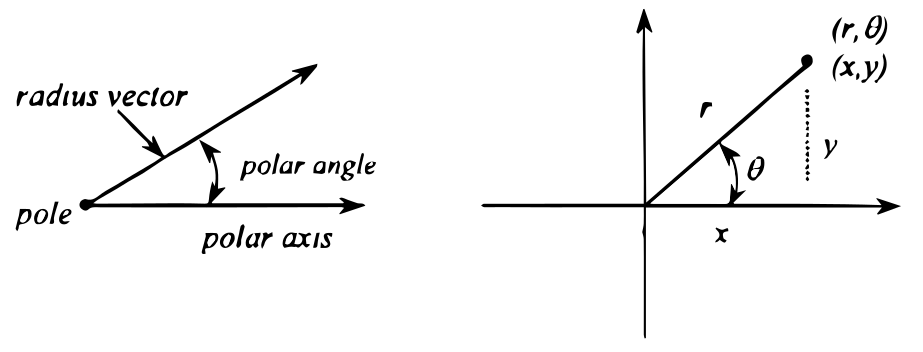
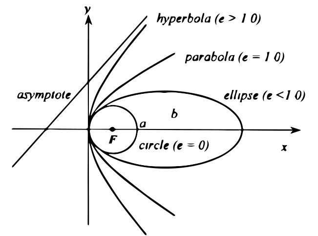

Analytic Geometry (Parabola, Ellipse & Hyperbola)
Parabola
Parabola is a locus of a point which moves so that it is always equidistant to a fixed point called focus and to a fixed straight line called directrix.
-
Equations:
General equations:

Axis parallel to the y-axis:
$$A{x^2} + Dx + Ey + F = 0$$
Axis parallel to the x-axis:
$$C{y^2} + Dx + Ey + F = 0$$
Standard equations:
Vertex (V) at origin (0, 0)
-
Axis along x-axis:
Opens to the right
$${y^2} = 4ax$$
Opens to the left
$${y^2} = - 4ax$$
-
Axis along y-axis:
Opens up
$${x^2} = 4ay$$
Opens down
$${x^2} = - 4ay$$
Vertex (V) at (h, k)
-
Axis parallel to the x-axis:
Opens to the right
$${(y - k)^2} = 4a(x - h)$$
Opens to the left
$${(y - k)^2} = - 4a(x - h)$$
-
Axis parallel to the y-axis:
Opens upward
$${(x - h)^2} = 4a(y - k)$$
Opens downward
$${(x - h)^2} = - 4a(y - k)$$
-
Eccentricity: The ratio of the distance to the focus to the distance to the directrix.
$$e = {f \over d}\ \ \ \ \ \ \text{since}\ \ \ \ \ \ f = d, \ \ \ \ \ \ e = 1$$
Latus rectum: A line that passes through the focus and perpendicular to the axis of the conic.
$$\text{LR} = 4a$$
When the equation given is general equation rather than standard equation, the vertex V(h, k) of the parabola and its focal length /radius (a) can be calculated by converting the general equation to standard using the process known as completing the square. Or using the following formulas:
-
For axis horizontal: $C{y^2} + Dx + Ey + F = 0$
$$h = {{{E^2} - 4CF} \over {4CD}}\ \ \ \ \ \ \ k = {{ - E} \over {2C}}\ \ \ \ \ \ \ a = {{ - D} \over {4C}}$$
-
For axis vertical: $A{x^2} + Dx + Ey + F = 0$
$$h = {{ - D} \over {2A}}\ \ \ \ \ \ \ k = {{{D^2} - 4AF} \over {4AE}}\ \ \ \ \ \ \ a = {{ - E} \over {4A}}$$
Ellipse
Ellipse is a locus of a point which moves so that the sum of its distance to the fixed point (foci) is constant and is equal to the length of the major axis (2a).
-
Equations:
General Equation:
$$A{x^2} + C{y^2} + Dx + Ey + F = 0$$

Note: d1 + d2 = 2a. The major axis = 2a, is the distance from V1 to V2. Also, the relationship between a, b and c is
$${b^2} + {c^2} = {a^2}$$
a is always greater than b.
If D & E = 0, center is at the origin (0, 0). If either D or E, of both D & E $\ne$ 0, the center is at (h, k).
Standard Equations:
C(0, 0)
$$\eqalign{
& {{{x^2}} \over {{a^2}}} + {{{y^2}} \over {{b^2}}} = 1 \to \ \text{Major axis is horizontal} \cr
& {{{x^2}} \over {{b^2}}} + {{{y^2}} \over {{a^2}}} = 1 \to \ \text{Major axis is vertical} \cr} $$
C(h, k)
$$\eqalign{
& {{{{\left( {x - h} \right)}^2}} \over {{a^2}}} + {{{{\left( {y - k} \right)}^2}} \over {{b^2}}} = 1 \to \ \text{Major axis is horizontal} \cr
& {{{{\left( {x - h} \right)}^2}} \over {{b^2}}} + {{{{\left( {y - k} \right)}^2}} \over {{a^2}}} = 1 \to \ \text{Major axis is vertical} \cr} $$
-
Eccentricity: (e< 1.0)
$$\eqalign{
& e = {c \over a} \cr
& \text{or} \cr
& e = {a \over D} \cr} $$
-
Length of Latus Rectum:
$$\text{LR} = {{2{b^2}} \over a}$$
where:
a = semi-major axis
b = semi-minor axis
When the equation given is general equation rather than standard equation, the center (h, k) of an ellipse and its focal length (c) can be calculated by converting the general equation to standard using the process known as completing the square. Or using the following formulas:
General equation:
$$A{x^2} + C{y^2} + Dx + Ey + F = 0$$
$$\eqalign{
& h = {{ - D} \over {2A}} \cr
& k = {{ - E} \over {2C}} \cr
& c = \sqrt {{a^2} - {b^2}} \cr} $$
Hyperbola
Hyperbola is a locus of a point which moves so that the difference of the distances to the fixed points (foci) is constant and is equal to the length of the transverse axis (2a).
-
Equations:
General equations:
-
Transverse axis - horizontal

$$A{x^2} - C{y^2} + Dx + Ey + F = 0$$
Note: Transverse axis is the axis that passes through the foci, vertices and the center of the hyperbola while the conjugate axis is the one that is perpendicular to the transverse axis.
Length of the transverse axis = $2a \ \ \ \ \text{or} \ \ \ \ \ 2\sqrt C $
Length of the conjugate axis = $2b \ \ \ \ \text{or} \ \ \ \ \ 2\sqrt A $
where: A and C are the numerical coefficients (absolute value) of x2 and y2 respectively.
Also, the relationship between a, b and c is: $\ \ \ \ \ {a^2} + {b^2} = {c^2}$
-
Transverse axis - vertical:
$$C{y^2} - A{x^2} + Dx + Ey + F = 0$$
Length of the transverse axis = $2a \ \ \ \ \text{or} \ \ \ \ \ 2\sqrt A $
Length of the conjugate axis = $2b \ \ \ \ \text{or} \ \ \ \ \ 2\sqrt C $
where: A and C are the numerical coefficients (absolute value) of x2 and y2 respectively.
Also, the relationship between a, b and c is: $\ \ \ \ \ {a^2} + {b^2} = {c^2}$
Standard equations:
C(0, 0)
Transverse axis horizontal:
$${{{x^2}} \over {{a^2}}} - {{{y^2}} \over {{b^2}}} = 1$$
Transverse axis vertical:
$${{{y^2}} \over {{a^2}}} - {{{x^2}} \over {{b^2}}} = 1$$
C(h, k)
Transverse axis horizontal:
$${{{{\left( {x - h} \right)}^2}} \over {{a^2}}} - {{{{\left( {y - k} \right)}^2}} \over {{b^2}}} = 1$$
Transverse axis vertical:
$${{{{\left( {y - k} \right)}^2}} \over {{a^2}}} - {{{{\left( {x - h} \right)}^2}} \over {{b^2}}} = 1$$
-
Eccentricity: (e > 1.0)
$$e = {c \over a}\ \ \ \ \ \ \text{or}\ \ \ \ \ \ e = {a \over D}$$
-
Length of Latus Rectum:
$$LR = {{2{b^2}} \over a}$$
where:
a = semi-major axis
b = semi-minor axis
When the equation given is general equation rather than standard equation, the center (h, k)of a hyperbola can be calculated by converting the general equation to standard using the process known as completing the square. Or using the following formulas:
$$h = {{ - D} \over {2A}}\ \ \ \ \ \ \ \ \ \ k = {{ - E} \over {2C}}$$
Polar Coordinates
Polar coordinates refers to the coordinates of a point in a system of coordinates where the position of a point is determined by the length of ray segment (the radius vector) from the fixed origin (the pole) and the angle (the polar angle) the ray (the vector) makes with a fixed line (the polar axis).
Polar angle is sometimes called the vectorial angle, the argument, the amplitude or the azimuth of a point.

Relationship between polar coordinates and rectangular coordinates:
$$\eqalign{
& x = r\cos \theta \cr
& y = r\sin \theta \cr
& r = \sqrt {{x^2} + {y^2}} \cr
& \theta = \arctan {y \over x} \cr} $$
Tip: Common forms of conic sections:
